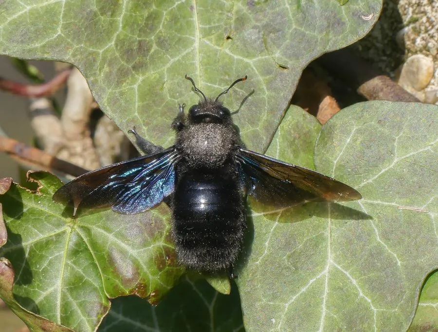

昆虫 · 动物界
紫木蜂 Xylocopa violacea

通体紫黑色、带蓝紫金属光泽的大型独居蜂，在枯木中凿洞筑巢，是地中海地区常见而重要的传粉昆虫。
- 分类
- 门节肢动物门纲昆虫纲目膜翅目科蜜蜂科属木蜂属
- 栖息环境
- 花园、果园、林缘与村庄，常在枯木和旧木结构中筑巢
- 地理分布
- 地中海沿岸、欧洲南部和北非
- 保护级别
- 暂无评估
物种志
紫木蜂体长约 2–3 cm，通体黑色，在阳光下泛出蓝紫色金属光泽，体表有稀疏的黑毛，翅膀深褐色；体型粗壮，飞行时声音低沉，外形像一只大个头的蜜蜂。复眼大，上颚强壮，能咬穿干枯的木头。
它喜欢在枯死的树干、木梁和竹竿中凿洞筑巢，用木屑分隔成多个小室，每室放一份花粉团并产一枚卵，幼虫孵化后取食花粉。紫木蜂分布在地中海沿岸、欧洲南部和北非，一年发生一代，以成虫越冬，春季出现，取食多种花的花蜜和花粉，是重要的野生传粉者。它没有蜂群，属独居蜂，性情温和，一般不主动攻击人，只有在被挤压时才可能蜇人，常被视为花园和果园里的有益昆虫。
形态与习性
- 食性取食多种花的花蜜和花粉
- 体长约 2–3 cm
- 筑巢在枯木、木梁中凿洞，分隔成多个小室
- 生活史一年发生一代，以成虫越冬
- 社会性独居蜂，没有蜂群和蜂王
- 分布地中海沿岸、欧洲南部和北非
趣味知识
- 紫木蜂在阳光下会泛出蓝紫色金属光泽，非常漂亮。
- 它在枯木里凿洞筑巢，所以常出现在老木屋和旧木梁附近。
- 紫木蜂是独居蜂，性情温和，一般不主动蜇人。